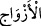

Böyle yaparsan hemen menzil-i maksuda erişirsin
Şükür yolundan gel ki ayağın kaymasın
36. Yerin bitirdiklerinden, insanların kendilerinden ve henüz mahiyetini
bilmedikleri şeylerden bütün çiftleri yaratan Allah’ı tesbih ve takdis ederim.
“Yerin bitirdiklerinden,” yerin bitirdiği hububat, meyveler, otlar ve ağaçlardan… Bu
ifâde “çiftleri” açıklamaktadır. Zikredilen şeylerden ve başkalarından yerde biten her
şey kastedilmiştir.
“İnsanların kendilerinden” çiftler; erkek ve dişiyi yaratmıştır. “Ve henüz mâhiyetini
bilmedikleri şeylerden” yâni onları tam olarak kavramaya güçleri olmadığından, dînî
ve dünyevî maslahatlarından hiçbir şey onlarla ilgili bulunmadığından özelliklerine
Allah’ın kendilerini muttali kılmadığı varlıklardan çiftleri yaratan…
Kurtubî der ki: “Henüz mahiyetini bilmedikleri şeyler” Allah Teâlâ’nın karada,
denizde, gökte ve yerde yarattığı çeşitli sınıflar/türler demektir. Bunların Allah’ın
yaratıp da insanların bilmediği, meleklerin bildiği şeyler olması mümkündür. Hatta
bunları hiçbir mahlûkun bilmemesi de mümkündür. Kara ve deniz canlılarının bin sınıf
olduğu söylenir. İnsanlar bunların çoğunu bilmezler.
Bahru’l-ulûm’da der ki: “Mânânın ‘Allah’ın yarattığı varlıklardan künhünü idrâk
edemediğiniz şeylerden’ şeklinde olması da mümkündür. Sevab ve azab bunlardandır.
Nitekim Hz. Peygamber (s.a.) şöyle buyurmuştur: “Dört şey vardır ki onların sonunun
ne olduğu idrak edilemez. Bunlar nefsin şer ve kötülükleri, İblis’in hilesi, cennet
ehlinin sevabı ve cehennem ehlinin azabıdır.” Ruh da mâhiyeti idrak edilemeyen
şeylerdendir. Çünkü Allah Teâlâ’nın bir kimseyi ruhun hakikatine muttali kıldığı bize
ulaşmamıştır.
“bütün çiftleri yaratan Allah’ı tesbih ve takdis ederim.”
“__WORD__ kelimesi inanç ve söz olarak kötülükten uzak tutmak demek olan tesbîhin özel
ismidir. Yani kötülüğün Allah’tan uzak olduğuna inanmak ve buna hükmetmektir. Çünkü
şahıslar için Zeyd ve Amr gibi isimler, cinsler için arslan demek olan Üsame gibi
isimler, alem/özel isim olduğu gibi mânâlar için de özel isimler olabilir. Fakat aynların
özel isimleri muzaf olmaz. Âyette olduğu gibi mânâların özel isimlerinin izâfetsiz
kullanılması mümkün değildir.
“__WORD__ kelimesi “__WORD__ kelimesinin çoğuludur. Çift demektir. Ferdin zıddıdır. Türlere
de “__WORD__ denilir. Çünkü her tür aynı kökten ayrıldığı ortağının çiftidir.
“__WORD__ kelimesinde kendisinden sonra gelen şeylerin önemi ve büyüklüğü